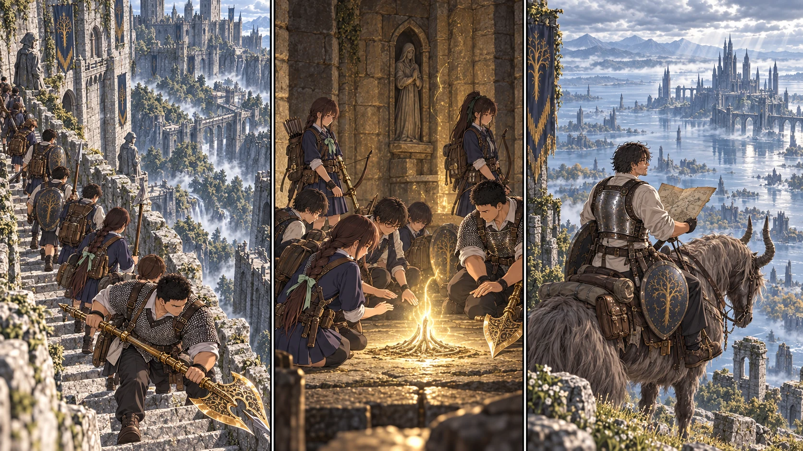

最新の本編へ帰れる場所を、みんなのものに。

【DAY42 午前｜勝利の後始末】城主を倒しても、火傷を治しても、腹は減る。先生たちは小部屋で休息し、教会へ戻った。待っていたのは鹿一頭と、結衣の当番表だった。十二食分の肉に買い足した二十一食を合わせる。先生は集めたルーンから四百を自分の生命力と持久力へ回し、Lv40になった。怖くなくなったのではない。次も前に立つために、倒れにくくしておく。
剣と盾、胸の鎧をカーレに直してもらう。袖の焦げ跡は残る。矢百本も買い足し、四人の矢筒へ分けた。今日、教会に残っていた二十人は初めて城へ行く。先生が一人で祝福を開けても、この道のりまでは代われない。颯は一行に加わる前に、指笛を先生へ差し出した。「夕方には返してくださいね」。借りるのは今日の探索の間だけだ。
【昼｜城への列】先頭の直人が止まると、荷を持つ列も止まった。大地の黄金のハルバードは、二つの班の間から見える目印だった。普通の兵を見つけても三十二人が一斉に走り出さない。盾と槍が通路を押さえ、弓が一体ずつ落とし、後ろは石段を一段ずつ上がる。四人の兵と二羽の戦鷹を退け、傷を負った者はいなかった。
美咲は、あの巨大な壁の内側にも空があることに驚いていた。遠くで見ていた城は、ただの怖い塊だった。近づくと、階段の縁が欠けていて、風の通る窓があって、人が逃げるための隙間もある。「ここ、覚えた？」と結衣が振り向く。美咲は頷き、角の壊れた石をもう一度見た。怖いままでも、覚えることはできる。
【奥まった小部屋】最後の一人が光へ触れるまで、二隊は入口を守った。これで全員、ここへ自分の足で来た。城へ住み替えたのではない。危なくなれば帰れる先が増えたのだ。夕方、教会へ戻る転送を一人ずつ確かめる。三十二人分の返事が揃い、結衣が名簿を閉じた。
【同じ昼｜先生・リエーニエ】城の裏から続く道を抜けると、湖が空を映していた。トレントが崖の縁で鼻を鳴らす。遠い学院の輪郭は水気で青く霞み、その下に、歩けそうな浅瀬と見通せない草地が広がっている。広い。ゲームの地図では一画面でも、三十人を歩かせるとなれば別の話だった。
先生は湖を臨む断崖、イリス教会、湖畔の道を順に確かめた。祝福は場所を記して触れずに残し、石碑の地図断片を拾う。東へ伸びる道には、次の探索の余地がある。ただし、馬で通れたから荷を持った生徒も安全に通れる、とまでは書かない。今日見えたことだけを書き足した。
【18:30｜エレの教会】先生が指笛を返すと、颯は馬の首を撫でた。「ちゃんと帰ってきた」。誰のことを言ったのか、先生は聞かなかった。地面に地図を広げると、城まで歩いた美咲が、小部屋へ曲がる角を指で示した。先生だけの地図が、少しずつ皆の地図になっていく。明日から二隊は割符を探す。先に、その帰路と連絡の約束を揃える。